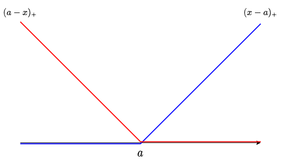
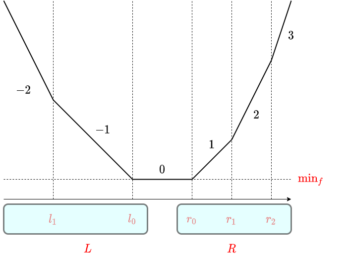
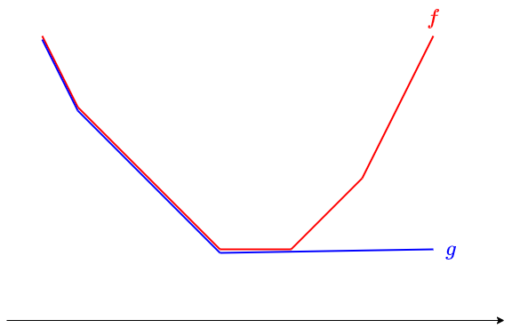
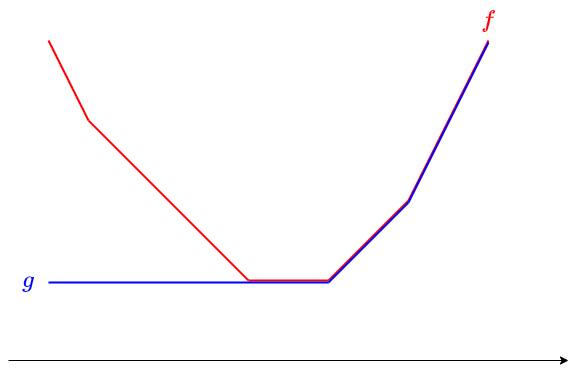
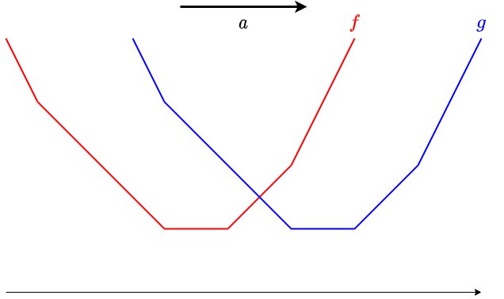

Slope Trick 讲解（maspy 博客中文翻译）
作者（原文）：maspy（maspypy.com） 来源分类页：https://maspypy.com/category/algorithm_math 说明：本文件由分类页中列出的博客文章链接下载后翻译整理而成。数学公式（$...$ 与
$$...$$）保持原样，未作改动。
目录
- slope trick (1) 解说编（slope trick (1) 解説編）
- slope trick (2) 问题编（slope trick (2) 問題編）
- slope trick (3) 凸共役（slope trick 的凸共轭）
slope trick (1) 解说编（slope trick (1) 解説編）
为顾及剧透，把能用此题的题整理到了别文 slope trick (2) 问题编。
关于具体实现代码，必要时请参考 slope trick (2) 问题编中的解答例。
日本竞技编程界没见过这个叫法，所以依 codeforces blog 文章称为 slope trick。
看过去题时发现，能用它的题常被当作 boss 题放置，或 AC 人数少，或解说用了别的思路而显得难懂。感觉几乎没见过作为典型技巧介绍的中文文章，所以我这边简单整理一下。
目录
- 参考文献
- ei1333 さん的实现例
- 分段线性凸函数
- 数据的持有方式
- 可实现的操作
参考文献
- https://codeforces.com/blog/entry/47821
- https://codeforces.com/blog/entry/77298
（感觉叫 slope trick 的东西与竞技编程界所称的相近） Rote, G. (2018). Isotonic regression by dynamic programming. In 2nd Symposium on Simplicity in Algorithms (SOSA 2019). Schloss Dagstuhl-Leibniz-Zentrum fuer Informatik. （相当新的论文，但也相近） — 熨斗袋 (@noshi91) March 13, 2021
ei1333 さん的实现例
- https://ei1333.github.io/library/structure/others/slope-trick.hpp
- https://ei1333.github.io/library/structure/others/generalized-slope-trick.hpp
分段线性凸函数
slope trick 是一种良好地管理如下连续函数 $f\colon \R\longrightarrow \R$ 的技巧：
 【条件】 $f$ 的图像，是从左起依次连接斜率为 $l, l+1, \ldots, r-1, r$ 的线段而成的折线。（※ 表述略粗略。）
【条件】 $f$ 的图像，是从左起依次连接斜率为 $l, l+1, \ldots, r-1, r$ 的线段而成的折线。（※ 表述略粗略。）
就是这样的东西。连接了斜率为 $-2, -1, 0, 1, 2, 3$ 的线段。虽说线段，两端是半直线，但麻烦，也含这些统称为“线段”。
 另外，为方便也考虑长度为 $0$ 的线段。
另外，为方便也考虑长度为 $0$ 的线段。
上图中，视为按此顺序连接了：
- $(-\infty, a]$ 上斜率为 $-2$
- $[a,b]$ 上斜率为 $-1$
- $[b,b]$ 上斜率为 $0$
- $[b,c]$ 上斜率为 $1$
- $[c,c]$ 上斜率为 $2$
- $[c,\infty)$ 上斜率为 $3$
的线段。结果，斜率跳变的情形也包含在考察对象中。
以下把这样的函数称为分段线性凸函数。虽要求斜率的整数性，严格说仅“分段线性凸”还不够，但本文中应不会混乱。敬请注意。
具体例
以下函数是分段线性凸函数：
- $|x|$ 的平移 $f(x) = |x-a|$
- 形如 $f(x) = \max(0, x-a)$ 的函数。以下记为 $(x-a)_{+}$。
- 形如 $f(x) = \max(0, a-x)$ 的函数。以下记为 $(a-x)_{+}$。

特别把重要的后两个可视化一下。它们是 $|x-a|$ 的左半、右半那样的函数，且成立 $|x-a| = (x-a)_{+} + (a-x)_{+}$。另外，分段线性凸函数的和也是分段线性凸函数，因此例如 $f(x) = \sum_{i} |x-a_i|$ 这样的函数也是分段线性凸函数。
数据的持有方式
slope trick 是把分段线性凸函数替换为斜率变化点的多重集来管理，从而使特定函数操作能简洁进行。
数据的细节似乎有几种模式，例如 https://codeforces.com/blog/entry/77298 中也有用变化点与 $x\to\infty$ 处样子来描述函数的尝试。这次介绍我自己想来觉得处理简单的。

对分段线性凸函数 $f$，持有如下 $3$ 个信息：- $\text{min}_f$：$f$ 的最小值
- $L$：斜率 $\leq 0$ 的部分中，斜率变化点全体的多重集
- $R$：斜率 $\geq 0$ 的部分中，斜率变化点全体的多重集
以下总以 $l_0$ 表示 $L$ 的最大值、$r_0$ 表示 $R$ 的最小值。另外 $L$ 或 $R$ 为空时，定 $l_0 = -\infty$, $r_0 = \infty$（也可显式放入哨兵）。作为“多重集”的持有方式，设想用优先队列，使总能取到 $l_0, r_0$。
 斜率变化 $2$ 以上的地方的例子。
斜率变化 $2$ 以上的地方的例子。
还原
这样持有数据后，$f(x)$ 可如下表示：
实际上，只需验证左右两边：
- 处处斜率相等
- 在 $x\in [l_0,r_0]$ 处的值相等
两者都容易。
可实现的操作
记 $N = |L|+|R|$。此时可实现如下操作与复杂度。
最小值的获取：$O(1)$ 时间
答 $\min_{x\in \R} f(x)$ 及其实现的 $x$，可在 $O(1)$ 时间。本来就是管理 $\text{min}_f$，最小值直接返回即可。取最小值的 $x$ 范围是斜率为 $0$ 的区间 $[l_0, r_0]$，这只读优先队列头部即可，故也 $O(1)$ 取得。
加常数函数 $a$：$O(1)$ 时间
只需给 $\text{min}_f$ 加 $a$。当然。
加 $(x-a)_+$：$O(\log N)$ 时间
加它时，斜率变化点处增加 $a$。另外斜率最小值不变、最大值 $+1$，故 $L$ 大小不变，$R$ 大小增 $1$。因此把多重集 $L\cup R\cup \{a\}$ 从小到大切成 $|L|$ 个、$|R|+1$ 个，重新作为 $L$, $R$ 即可。例如如下步骤更新：
- 把 $a$ push 进 $L$。
- 从 $L$ pop 一个值，push 进 $R$。
$a > l_0$ 时最初的 push 是浪费，也可按 $a$ 与 $l_0$ 大小关系分支。或者用优先队列的 push/pop 合并方法，在 $a > l_0$ 时也几乎无浪费。例如 python 标准库 heapq 可用 heappushpop / heappush 各调一次实现。
$L$, $R$ 的更新方法已知，接下来考虑 $\text{min}_f$ 的更新。虽因 $a$ 的位置出现分支而显得麻烦，其实简单。关注更新前 $f$ 中 $L$ 的最大值 $l_0$。
其实更新后 $l_0$ 仍是给最小值的点。确实，$a$ 的插入使 $l_0$ 前后的斜率变为 $+0, +1$ 中某一种变化。更新前 $l_0$ 是斜率为 $-1, 0$ 的边界点，故更新后是斜率为 $-1, 0$ 或 $0, 1$ 的边界点。于是 $\text{min}_f$ 的变化等于 $f(l_0)$ 的变化，故
最小值的更新也完成。
加 $(a-x)_+$：$O(\log N)$ 时间
相同。
- $\text{min}_f\leftarrow \text{min}_f + (a-r_0)_+$
- 把 $a$ push 进 $R$
- 从 $R$ pop 一个值，push 进 $L$
即可。
加 $|x-a|$：$O(\log N)$ 时间
由 $|x-a| = (x-a)_+ + (a-x)_+$ 成立，把上面 $2$ 个操作任意顺序都做即可。
累积 min：$O(1)$ 时间

即把 $f$ 替换为 $g(x) := \min_{y\leq x} f(y)$ 的操作。只需把 $R$ 换成空集。
右侧累积 min：$O(1)$ 时间

把 $f$ 替换为 $g(x) := \min_{y\geq x} f(y)$ 的操作。只需把 $L$ 换成空集。
扩展
给数据结构再持有附加信息，可做更多操作。具体地，除了 $\text{min}_f$, $L$, $R$ 外，再持有给左侧统一加的值 $\text{add}_L$、给右侧统一加的值 $\text{add}_R$。
插入或取出时，注意实际值与放入 $L$, $R$ 的值的差分来进行操作。这样，对左集合、右集合全体的加算可在 $O(1)$ 时间做。
来确认可做哪些操作。
平移：$O(1)$ 时间
有分段线性凸函数 $f(x)$ 时，考虑求 $g(x) = f(x-a)$ 的函数 $g$。

只需给集合 $L$, $R$ 统一加 $a$。滑动最小值函数：$O(1)$ 时间
名字这样行吗。是取 sliding window minimum 的操作。
$a \leq b$ 时，计算由
 $a$ 以上 $b$ 以下所有平移取 min，几何上想也合理吧。为保险用数式理解。
$a$ 以上 $b$ 以下所有平移取 min，几何上想也合理吧。为保险用数式理解。
- 若 $x\leq l_0 + a$，则 $x-a\leq l_0$，故在 $[x-b,x-a]$ 上 $f$ 单调递减。于是 $g(x) = \min_{y\in [x-b,x-a]}f(y) = f(x-a)$
- 若 $x\geq r_0 + b$，则 $x-b\geq r_0$，故在 $[x-b,x-a]$ 上 $f$ 单调递增。于是 $g(x) = f(x-b)$
- 若 $l_0+a\leq x\leq r_0+b$，则 $[x-b,x-a]\cap [l_0,r_0]\neq \emptyset$，故 $g(x) = \text{min}_f$
得以验证。
另外，平移可视为此处的 $a = b$ 情形。
累积 min 操作可视为 $b = \infty$ 情形。不过，$\infty$ 多次加加减减运算可疑，且把 $\infty$ 替换为足够大常数实现时也有溢出与误差之忧，所以还是直接把 $R$ 置空的实现更好。
slope trick (2) 问题编（slope trick (2) 問題編）
以下假定已读过解说编。所用记号等是共通的，不再重新说明。
目录

- ABC 127 [F] Absolute minima
- 第2回 ドワンゴからの挑戦状 予选 [E] 花火
- UTPC 2012 [L] じょうしょうツリー
- KUPC 2015 [H] 壁壁壁壁壁壁壁
- ARC 070 [E] NarrowRectangles
- 其他问题
ABC 127 [F] Absolute minima
F - Absolute Minima（AtCoder）
直接实现解说编所述内容即可。
解答例：https://atcoder.jp/contests/abc127/submissions/20969428
此问题情形下，也可视为“向集合添加元素并取得中位数”。为添加一个元素，使 $L\cup R$ 增加 $2$ 个元素。也存在把优先队列操作次数减半的解法，但无需区分元素个数奇偶，实现或许更简洁。
（每次插入 $2$ 个，使得中位数无论元素个数奇偶都总以 $l_0, r_0$ 呈现，很漂亮，我很喜欢）
第2回 ドワンゴからの挑戦状 予选 [E] 花火
E - 花火（AtCoder）
虽是 AC 人数仅 3 人的 boss 题，却相当简单。这里就所有 $t_i$ 互异的情形说明（同时刻烟花的处理很简单，请想一想）。结果归约为如下问题。
给定数列 $p_1, p_2, \ldots, p_N$。巧妙构造单调递增数列 $a_1, a_2, \ldots, a_N$ 使 $\sum_{i}|p_i – a_i|$ 最小。
例如取 $a_i$ 从 $-A, -(A-1), \ldots, A-1, A$ 中选，则立刻想到 $O(NA)$ 时间的 DP 解法。记选到 $a_i = x$ 时的成本最小值为 $\dp_i(x)$，则例如如下要领可算所有 $\dp_i(x)$：
仔细看此式，其实它只是 slope trick 做就完事的问题。不是把 DP 计算结果看作“计算各点值的表”，而是看作“在计算一个函数”。这个函数始终是分段线性凸函数，用 slope trick 管理后其余就简单了。
结果如下即可求得答案：
- 从常数函数 $f(x) = 0$ 开始。
- 对 $i=1,2,\ldots$ 顺序，重复以下：
- 把 $f(x)$ 换成累积 $\min$。
- 给 $f(x)$ 加上 $|x-p_i|$。
- 最后输出 $f$ 的最小值。
解答例：https://atcoder.jp/contests/dwango2016-prelims/submissions/20969672
另外此问题中，一加上 $|x-p|$ 就取累积 min 并初始化 $R$，故无需持有 $R$。
解答例 2：https://atcoder.jp/contests/dwango2016-prelims/submissions/20969720
UTPC 2012 [L] じょうしょうツリー
L - じょうしょうツリー（AtCoder）
首先，预先按深度加上值，把问题读成：从父向子作成广义单调递减列。考虑树 dp。
记把子树 $v$ 变成“じょうしょうツリー”，且顶点 $v$ 的值变为 $x$ 的操作中最小成本为 $f_v(x)$。记 $v$ 的全体子节点为 $C(v)$，则易知
用 slope trick 管理所有这些函数 $f_v$。另外记 $g_v(x) = \min_{y\leq x} f_v(y)$。
- $g_v$ 可由 $f_v$ 在 $O(1)$ 时间算出（丢弃右侧集合）。
- $f_v$ 是 $\sum_{w\in C(v)}g_w$ 加上 $|x-a_v|$。
$\sum_{w\in C(v)} g_w$ 的处理是问题。
一般地，考虑给分段线性凸函数 $f$ 加上分段线性凸函数 $g$。记 $f, g$ 的数据大小为 $N_f$, $N_g$（请各自定义为持有的 $L$, $R$ 元素数之和等）。
分段线性凸函数 $g$ 具有 $g(x) = \text{min}_{g} + \sum_{l\in L_g} (l-x)_{+} + \sum_{r \in R_g} (x-r)_{+}$ 这样的表示。因此，给 $g$ 加算等价于：
- 加算 $(x-a)_+$
- 加算 $(a-x)_+$
- 加算 $\min_g$
各约做 $N_g$ 次。于是可知，给 $f$ 加 $g$ 在时间复杂度 $O(N_g\log(N_f+N_g))$ 内可做。
用 weighted union heuristic 计算 $\sum_{w\in C(v)} g_w$，可知本问题的树 dp 整体可在 $O(N\log^2N)$ 时间算。另外此问题也无需持有右侧集合 $R$。
解答例：https://atcoder.jp/contests/utpc2012/submissions/20970281
看解答例的 merge 部分可知，因 $R$ 为空，分段线性凸函数的加算与合并优先队列的操作完全一致。因此用 meldable 优先队列，也可在 $O(N\log N)$ 时间解。官方解说大概就是做这种事？
KUPC 2015 [H] 壁壁壁壁壁壁壁
H - WAAAAAAAAAAAAALL（AtCoder）
还是先试着把立刻想到的 DP 写成式。把加固材料移动这一操作，理解为对每 $i$ 决定从位置 $i$ 向 $i-1$ 移动的货物个数 $n_i$（正则为向左移，负则为向右移 $|n_i|$ 个）。
记 $n_i = x$ 已定，使位置 $i-1$ 之前加固材料足够时的最小成本为 $f_i(x)$。
则可知成立
初始状态为 $f_0(x) = \begin{cases}0 & (x=0)\\\infty & (x\neq 0)\end{cases}$，所求为 $f_{N}(0)$。
$f_0$ 看似不是分段线性凸函数，但可视为 $L = R = [0,0,0,\ldots]$（在 $x=0$ 处斜率变化无限次）而作为分段线性凸函数处理。
$g_i(x) = \min_{y\leq x+C_i} f_i(y)$ 如何计算？令 $z = y – C_i$，则 $g_i(x) = \min_{z\leq x} f_i(z + C_i)$，故 $g_i$ 是 $f_i$ 平移后取累积 min。
结果，从 $f_i$ 算 $f_{i+1}$ 的步骤可分解为：
- 平移 $-C_i$
- 取累积 $\min$
- 加算 $|x|$
这些全部可由 slope trick 简洁处理。因含平移操作，实现时也持有 $\text{add}_L$, $\text{add}_R$。
最后想算的是 $f_N(0)$。这通过把 $f_N$ 分解为 $(a-x)_{+}$, $(x-a)_+$ 可在 $O(N)$ 时间算。
首先，别忘了从 $L = [0,0,0,\ldots]$（足够多）开始。放入约 $2N$ 个就够。
解答例：https://atcoder.jp/contests/kupc2016/submissions/20983323
另外此问题也无需持有 $R$。
解答例：https://atcoder.jp/contests/kupc2016/submissions/20983382
ARC 070 [E] NarrowRectangles
E - NarrowRectangles（AtCoder）
我个人觉得，在 4 题 ARC 的第 3 题中最难。把 dp 表视为函数的想法，当时对我非常新颖，是留下强烈印象的喜欢的题。
不过，基于到此的解说，我想已经相当好解了。还是考虑自然的 dp。记把前 $i$ 个矩形连起来、且第 $i$ 个矩形左端 $x$ 坐标为 $x$ 时到那里为止的最小成本为 $f_i(x)$。记矩形宽为 $w_i = r_i – l_i$。
立刻可知可写为
这个操作，可通过给左集合、右集合加常数来完成。持有 $\text{add}_L$, $\text{add}_R$ 即可实现。
解答例：https://atcoder.jp/contests/arc070/submissions/20983784
其他问题
- ARC 123 [D] Inc, Dec – Decomposition
- ABC 217 [H] Snuketoon
slope trick (3) 凸共役（slope trick 的凸共轭）
概要
本文对凸函数的凸共轭（Legendre-Fenchel 变换）及其性质做一个简要整理。进一步，把它与 slope trick 对凸函数的处理结合起来，导出一个新的凸函数处理方式，称为 slope trick 的凸共轭。这个叫法是本文首次提出，至于今后会流行什么名字目前还不清楚。
凸函数的凸共轭
wikipedia：https://ja.wikipedia.org/wiki/%E5%87%B8%E5%85%B1%E5%BD%B9%E6%80%A7
定义
设 $f\colon \R\longrightarrow \R\cup\{\infty\}$（但恒不为恒等无穷大）。用下式定义 $f$ 的凸共轭 $f^{\star}$：
从 $f$ 得到 $f^{\star}$ 的操作也称为 Legendre-Fenchel 变换。几何上看，$f^{\star}(p)$ 相当于：在 $f$ 的图像下方、考虑斜率为 $p$ 的直线中 $y$ 截距尽可能大的那条。
Fenchel 的双共轭定理
下面的事实成立：
- $f^{\star}$ 是凸函数
- 当 $f$ 为凸函数且满足适当条件时，有 $f = (f^{\star})^{\star}$
关于“条件”这里省略，但下文要讲的闭区间上的分段线性凸函数满足该条件。
$f^{\star}$ 的凸性，由 $f^{\star}$ 是线性函数（从而是凸函数）的 $\sup$ 这一点可知。$f = (f^{\star})^{\star}$ 方面，$f \geq (f^{\star})^{\star}$ 是从定义直接可得的平凡不等式（请自行验证）。反方向的不等式，几何上意味着凸函数的图像可以由它的整个包络线还原出来。

极小卷积（infimal convolution / min-plus convolution）
以下，$f,g$ 等都表示“满足适当条件”的凸函数。
用下式定义 $f,g$ 的极小卷积 $f \mathop{\Box} g$：
与凸共轭的关系如下：
也就是说，取凸共轭后，加法与卷积会互换。
简单证明一下。由凸共轭的性质 $(f^{\star})^{\star} = f$，只需证上式。
分段线性凸函数的凸共轭
对于 slope trick (1) 解説編 中讲过的那种形式的分段线性凸函数 $f$，$f^{\star}$ 也依然是分段线性凸的，并且其图像有如下关系：
- 当 $f$ 在 $x = a$ 前后斜率由 $b$ 变为 $c$ 时，$f^{\star}$ 在 $[b,c]$ 上斜率为 $a$
对 $p\in [b,c]$，考虑 $f$ 图像下方的斜率为 $p$ 的直线，使得 $y$ 截距最大的直线会在 $x=a$ 处与 $f$ 一致。仅由上述性质还残留 $y$ 轴方向平移的自由度，但把它与平凡性质 $f^{\star}(0) = -\min_f$ 等结合，就能确定 $f^{\star}$。

slope trick 的凸共轭
在 slope trick (1) 解説編 中，我们对满足如下性质的、形如分段线性凸函数，加速了一些操作：
- 斜率的绝对值都是小的整数
本文考虑凸共轭也是一个能用 slope trick 处理的函数（即满足如下性质的分段线性凸函数）：
- 斜率变化点的坐标的绝对值都是小的整数
以下设 $f$ 满足该性质。通过把对 $f$ 的操作，经凸共轭转换成对 $f^{\star}$ 的操作，再用 $f^{\star}$ 上的 slope trick 来加速对 $f$ 的操作，这一方法就称为 slope trick 的凸共轭。
在 slope trick 中，我们用如下数据来管理分段线性凸函数 $F$：
- $F$ 的最小值
- 最小值左侧斜率变化点全体 $L$（用优先队列维护）
- 最小值右侧斜率变化点全体 $R$（用优先队列维护）
因此，在 slope trick 的凸共轭中，我们用如下数据来管理分段线性凸函数 $f$：
- $f(0)$
- 各非负整数 $n$ 对应的 $[n,n+1]$ 上的斜率所排成的序列 $(R_0, R_1, \ldots)$（用优先队列维护）
- 各非负整数 $n$ 对应的 $[-(n+1),-n]$ 上的斜率所排成的序列 $(L_0, L_1, \ldots)$（用优先队列维护）
可实现的操作
来确认可以加速的操作。以下用 $N$ 表示当前维护的优先队列的元素个数。
取得 $f(0)$：$O(1)$ 时间
因为直接维护了 $f(0)$，这是显然的。
加常数函数：$O(1)$ 时间
只需加到 $f(0)$ 上。
取得 $\min_{x}\bigl(f(x){}-{}px\bigr)$，特别是取得 $\min_xf(x)$：$O(N\log N)$ 时间
这等价于计算 $-f^{\star}(p)$。由 slope trick (1) 解説編，
成立，且 $\min_{f^{\star}} = -f(0)$，于是即可。slope trick 中取得最小值很容易但计算 $f(0)$ 很难；而在 slope trick 凸共轭中，取得 $f(0)$ 容易但取得最小值难。
平移 $f(x) \gets f(x\pm 1)$：$O(\log N)$ 时间
直接考虑 $f$ 的图像也可以，但这里也兼作练习，利用极小卷积与凸共轭。
取 $g$ 满足
则有 $f(x+1) = \bigl(f\mathop{\Box}g\bigr)(x)$。因此，只要能在凸共轭侧完成“加上 $g^{\star}$”的操作即可。
由 $g^{\star}(p) = p$ 成立，于是只需考虑 $f^{\star}(p) \gets f^{\star}(p) + p$ 这样的操作。
- 设 $L$ 的最大值为 $L_0$。这在操作前后都是 $f^{\star}$ 取最小的点。
- 给 $f^{\star}$ 的最小值加上 $L_0$。也就是给 $f(0)$ 加上 $L_0$。
- 把 $L_0$ 从 $L$ 弹出，移入 $R$。
这样就好了。$f(x)\gets f(x-1)$ 的情况，考虑在凸共轭侧加上 $-p$，同理可做。
对于坐标变化很小的平移，重复上述操作即可。坐标很大的平移（在 slope trick 中很简单）在 slope trick 的凸共轭中却不好处理。
加 $cx$, $c(x-0)_+$, $c(0-x)_+$：$O(1)$ 时间
这不用取凸共轭、直接按 $f$ 考虑就显然。给 $R$ 全体加上 $c$，或给 $L$ 全体加上 $-c$ 即可。
与平移结合，对绝对值小的整数 $a$ 就能加上 $c(x-a)_+$ 等。另外，把两者都做，就能加上 $c|x|$ 形的函数。
slope trick 中没法处理对较大的 $c$ 加 $c|x|$ 之类，但在 slope trick 的凸共轭中，即使 $c$ 很大也很简单。
滑动最小值函数 $f(x) \gets \min_{y\in [x-b,x-a]}f(y)$：$O((|a|+|b|)\log N)$ 时间
用极小卷积来导出计算方法。
取
则有把 $f$ 变成 $f\mathop{\Box} g$ 的操作正是所求。因此，考虑给 $f^{\star}$ 加上 $g^{\star}$ 的操作。
$g^{\star}$ 是在 $x=0$ 前后斜率由 $a$ 变为 $b$ 的折线。它可以写成 $ax + (b-a)(x-0)_+$ 等，所以可用 slope trick 对 $f^{\star}$ 的基本操作 $O(|a|+|b|)$ 次来完成。
问题例
- JAG 2017 autumn：J – Farm Village （解説記事）
- yukicoder：No. 2114 01 Matching （解説記事）
- SEERC 2020：A. Archeologists （提出）